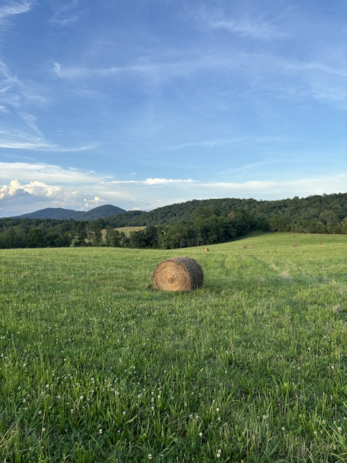

June!!
- "At times I feel your voice is reaching me from far away, while I am prisoner of a gaudy and unlivable present,
where all forms of human society have reached an extreme of their cycle and there is no imagining what new forms they may assume.
And I hear, from your voice, the invisible reasons which make cities live, through which perhaps, once dead, they will come to life again." - Italo Calvino
- An idea not quite jelled about cities & weather,, Lisa Robertson and Italo Calvino, Leslie Scalapino in the background,
her work both a city and weather, systems/landscapes, two boys playing in their frontyard, the house across the street from me.
- I'm trying to get you to hear me
- First white nectarine of the season so good I had to record it, June 12th, 5pm, eating it in front of the living room AC unit
- water bottle in that man's back pocket / and my heart is stricken with fear
- Dream: I've written a hybird poem-comic-collage and titled it "Chainsaw Epic"
- of what to me was joy of what to me was joy of what to me was joy
- Beautiful Artists! Fuck Fear!
- Return to the possibility of poem-plays & also girls
- An important book/force for me this month was A Sand Book by Ariana Reines.. I keep wanting to post a quote or something from it,
but it almost feels like to take out of context would rend the poem apart, render the quote inert.. maybe just
"I expected the world would respond to my thought / I had seen some ads / I had been to their school"
- Queen of Cups, 2 of Cups, 6 of Cups -- My cup runneth over! At night I talk to myself the way my therapist would
- fan edit of swayer and kate to lorde's "supercut"

|
 |
|
|
|
|
|
|
|
|
|